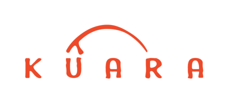
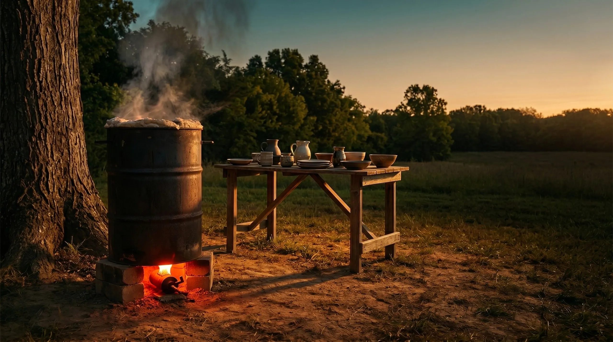
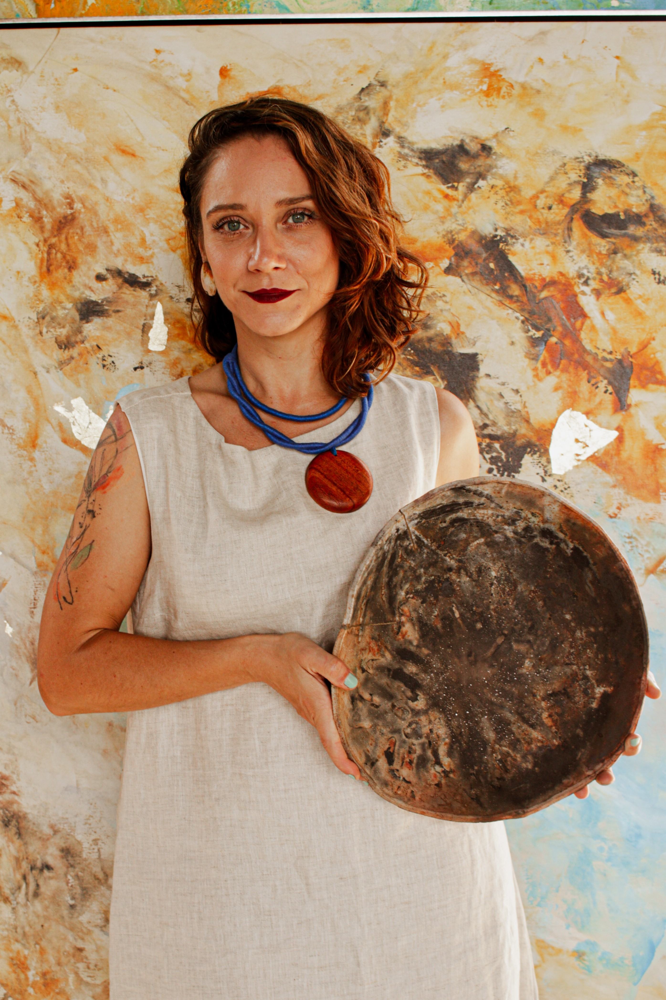
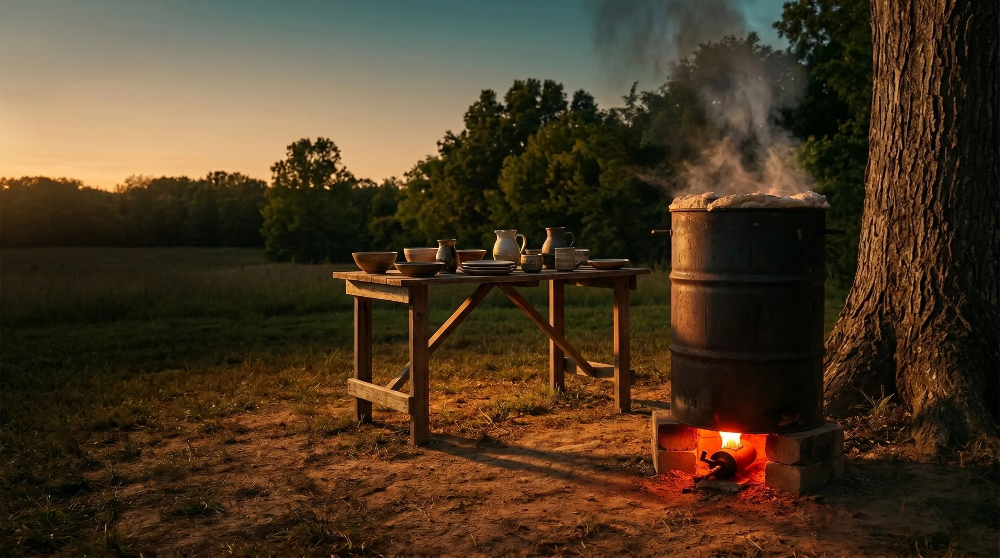

Projeto técnico
Você recebe o projeto do forno usado na Kûara, com lista de materiais, equipamentos, fornecedores, orçamento e cuidados de segurança.

Inscreva-se ↘
Mentoria online | Agosto a novembro de 2026
Aprenda com Amanda Maciel como construir e manejar um forno de latão a gás para queima de cerâmica, igual ao que usamos na Kûara: uma solução acessível, versátil e capaz de atingir até 1245 °C.
Muita gente chega à cerâmica com uma potência criativa enorme, mas encontra um gargalo justamente na etapa da queima.
A dificuldade de acesso a fornos acaba limitando a produção, a experimentação e a liberdade de desenvolver um trabalho autoral. Para quem mora fora dos grandes centros, esse desafio costuma ser ainda maior.
O Forno de Latão apresenta um caminho possível: artesanal, manual e acessível. Você acompanha a chama, observa a curva, aprende a ler a atmosfera, ajusta equipamentos e entende o comportamento do forno com presença.
Com investimento médio em torno de R$ 2.500 para a construção, ele permite conduzir diferentes tipos de queima com uma estrutura potente e mais próxima da sua pesquisa.
Promessa
Você recebe o projeto do forno usado na Kûara, com lista de materiais, equipamentos, fornecedores, orçamento e cuidados de segurança.
Durante a mentoria, a turma organiza compras, adapta materiais disponíveis em cada região e tira dúvidas de montagem.
Você aprende a manejar maçarico, termopar, manômetro, montagem de carga, curvas, tempo, temperatura e atmosfera.
Biscoito, esmalte, monoqueima, raku nu, obvara, saggar, carbonizações, reduções e iridescências.
E-book ilustrado, planilhas, curvas de queima, fornecedores, registros e materiais complementares para consulta.
Você não recebe apenas um passo a passo: desenvolve segurança, repertório e leitura para seguir pesquisando.
É para você se...
Não é para você se...
Programa ao vivo
As aulas acontecem ao vivo pelo Google Meet e ficam gravadas na Hotmart por 1 ano.
Projeto utilizado na Kûara, passo a passo da construção, arquitetura térmica, lista de materiais, fornecedores, segurança e cronograma individual.
Montagem de carga, curvas de biscoito, esmalte, raku e monoqueima, manejo inicial dos equipamentos e ajustes da construção.
Saggar, impressões botânicas, sais, metais, carbonizações, raku iridescente, raku nu, obvara e o fogo como parte do processo criativo.
Vivência central da mentoria: carga, curva, maçarico, termopar, manômetro, segurança, atmosfera, finalização e resfriamento controlado.
Análise coletiva dos resultados, leitura de registros, dúvidas, pontos de aprimoramento e continuidade da pesquisa com o forno.
Provas e imagens
O forno de latão não é apenas uma estrutura. Ele muda a relação com o tempo, com o risco, com a observação e com a autoria do processo.
Com certeza a mentoria valeu cada centavo. Amanda está entre os professores que mudaram a minha vida pela humildade, leveza e respeito pelo processo de cada um.
Bárbara G. · Forno de Latão e Fornos de Tijolos
Sou muito grata por ter feito a mentoria. Além do aprendizado sobre cerâmica e fornos, também aprendi muito sobre gestão e pedagogia.
Anna T. · Forno de Latão
Quem conduz
Amanda Maciel é ceramista, pesquisadora e fundadora da Kûara Cerâmicas. Graduada em Arquitetura e Urbanismo pela Universidade Federal de Minas Gerais, também concluiu mestrado e doutorado em Geografia pela UFMG.
Sua trajetória acadêmica e profissional, com foco na área socioambiental, atravessa seu fazer artístico, sempre orientado pela pesquisa, pela relação com os territórios e pelo respeito e admiração por quem mantém vivos saberes tradicionais.
Na mentoria, Amanda compartilha o projeto do forno que utiliza em sua própria prática, junto com métodos, cuidados, experimentações e aprendizados acumulados no trabalho com fornos artesanais e queimas cerâmicas.

Inscrições
Da construção às queimas: uma mentoria online, ao vivo e com acompanhamento para você construir e aprender a utilizar seu próprio Forno de Latão a gás.
A Kûara te explica
Respostas honestas para decidir com clareza se esta turma é para você.
Sim. O forno de latão é potente, versátil e capaz de alcançar excelentes resultados, inclusive em queimas de esmalte de alta temperatura, desde que sejam utilizadas massas cerâmicas e esmaltes compatíveis. Ele é artesanal, com controle manual e variações internas de temperatura que fazem parte do processo.
Sim. É importante já ter alguma familiaridade com modelagem cerâmica. Você não precisa ter experiência com queimas, mas será necessário produzir algumas peças para acompanhar o processo completo.
Não é o ideal. A proposta da mentoria é que você construa e utilize o forno durante o período de acompanhamento, aproveitando o suporte em tempo real para tirar dúvidas, ajustar processos e evoluir com segurança.
O volume interno total é de aproximadamente 121 litros. A área útil, onde as peças são acomodadas, tem cerca de 44 cm de diâmetro por 55 cm de altura, aproximadamente 84 litros de volume útil.
O valor varia conforme a região, mas a média gira em torno de R$ 2.500, incluindo materiais para construção do corpo do forno, mobília refratária básica, maçarico, termopar, manômetro, ferragens e acessórios.
Não é recomendado. O forno deve ser utilizado em áreas abertas e bem ventiladas, mesmo que cobertas e protegidas da chuva.
A manta cerâmica exige cuidados no manuseio. Suas fibras podem causar irritação na pele e riscos à saúde quando inaladas continuamente. Durante a mentoria, você aprende quais EPIs utilizar e quais procedimentos adotar.
Sim. Vamos estudar arquitetura do forno, materiais, equipamentos, mobílias refratárias, montagem da carga e condução de diferentes tipos de queima para otimizar resultados e ampliar repertório técnico.
Não. O foco da mentoria é a construção e o manejo do forno de latão. Modelagem e esmaltação aparecem apenas quando ajudam a compreender os resultados das queimas.
Durante 3 meses, a turma terá um grupo exclusivo. Amanda estará presente de segunda a sexta-feira, uma vez ao dia, para orientar processos, acompanhar construções e comentar fotos, vídeos e testes.
Sim. O e-book ficará disponível para download, assim como planilhas de curva de queima, planilha de orçamento, fornecedores e materiais de estudo exclusivos.
Sim. Embora participar ao vivo seja o ideal, todas as aulas ficam gravadas e disponíveis na Hotmart por 1 ano.

Turma 2026
Se você quer aprofundar sua pesquisa cerâmica, deixar de depender exclusivamente de estruturas externas e construir uma relação mais próxima com o fogo, esta mentoria foi pensada para acompanhar você nesse caminho.
Quero construir meu forno ↗